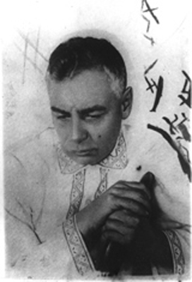

Voronsky in Lipetsk 1929
Welcome to the A. K. Voronsky website. Material for this site has come from many sources, and we are constantly adding new information as it becomes available. We encourage corrections, contributions and suggestions from our readers.